Your agents work. The island keeps watch.
Niko Island hangs a small black island from the top of your Mac's screen. It shows what every AI coding agent on your Mac is doing, moves with the menu bar, opens when one needs you, and lets you approve or answer on the spot.
macOS 14 or later · Apple silicon and Intel · MIT license
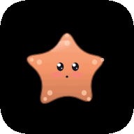
atlas-api· running swift testswift test --filter UploadTests
swift test --filter UploadTests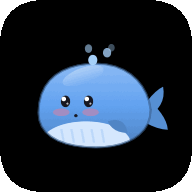
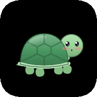
Invoice.swiftA sketch of the island in your browser, with made-up sessions. Click it, or pick a state.
One creature per agent
Each agent gets its own pixel creature, drawn in code, so you can tell sessions apart before you read a word. Swap them around in Settings if you like.
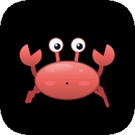
CrabZCode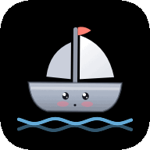
BoatCursor · Windsurf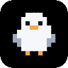
GullCopilot CLI · CodeBuddy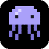
JellyfishGemini CLI · Qwen Code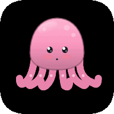
OctopusTrae · Kiro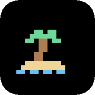
Islandeverything elseSmall while they work. Open when they need you.
Built for the moment an agent stops and waits while you are looking at something else.
Quiet until it matters
Collapsed, the island is one creature and a few words. It opens by itself only when an agent is blocked on you, and never takes keyboard focus.
Moves with the menu bar
Slide to a full-screen app and the island leaves with the desktop. Push the pointer to the top and it comes down together with the menu bar. A request for a decision can still drop in.
Finds your sessions
Claude Code and Codex sessions are listed from the agents' own session logs: desktop apps, sessions that were already open, agents you have not connected yet.
Decide in place
Allow once, always allow a tool, allow everything for the session, deny, or hand the decision back to the agent. Nothing is decided for you.
Questions as tiles
When an agent asks you to choose, its options become big tiles: single or multiple choice, with room to type something else.
Back to the right window
Click a row or a notification and that session's Terminal.app or iTerm2 tab comes to the front, tmux panes included. A desktop-app session brings its app forward.
Chips that orient you
Every row says how long, which agent and where it runs, next to what the agent is doing right now.
Yours to shape
Accent colour, width, row density, which chips, hover timing, which display, language, and a global shortcut (⌃⌥I) that opens the island from anywhere.
A welcome that sets things up
The first launch finds the agents on your Mac, shows which are running, and connects the ones you tick. Every change is backed up and can be taken out again.
Sounds you choose
Five moments, two built-in sets, macOS sounds, your own files or a sound pack. Everything is off until you switch it on.
Usage per agent
Claude Code, Codex, ZCode or all of them: the last five hours, today, seven days, and a counter you reset with a button. Read from files already on your disk.
An installer you can trust
It scans first, backs up, verifies and rolls back on failure. Uninstalling removes only what it added, and your agents keep working.
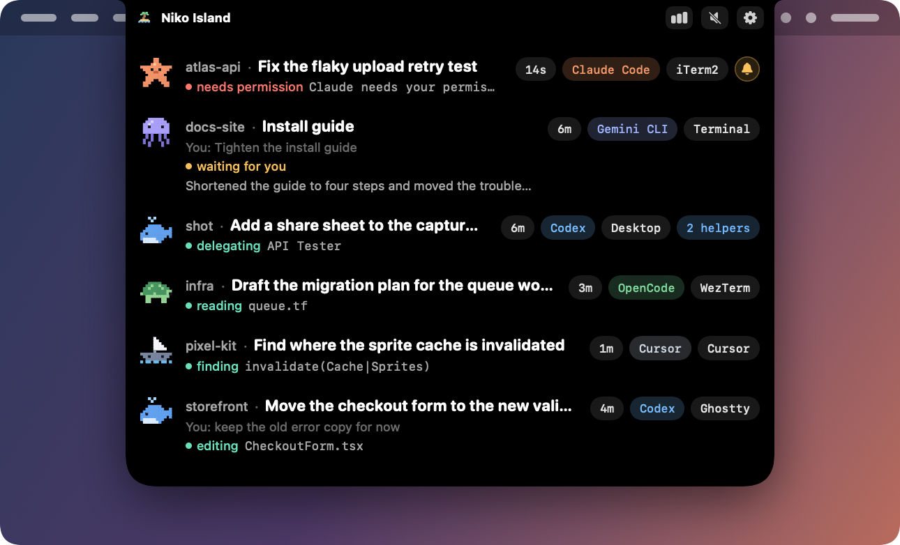
Every session, one glance
Flat rows, no chrome: the project, what the session is about, what the agent is doing this second, its last reply. The ones waiting for you carry a bell.
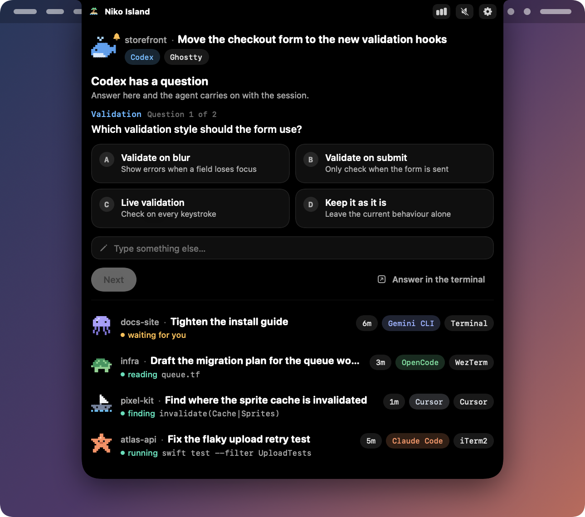
Answer without going back
A request stays on the island until you decide or the agent withdraws it. Clicking elsewhere puts the island away; it never answers for you.
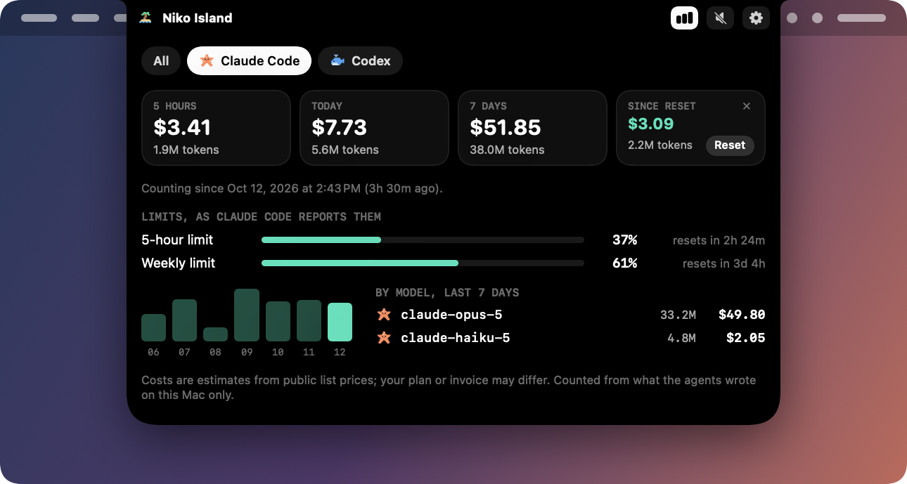
Know what each agent cost
Pick an agent: five hours, today, seven days, and a counter that starts over when you press Reset. Five-hour and weekly limits appear as Claude Code and Codex report them. Counted on your Mac from files that are already there.
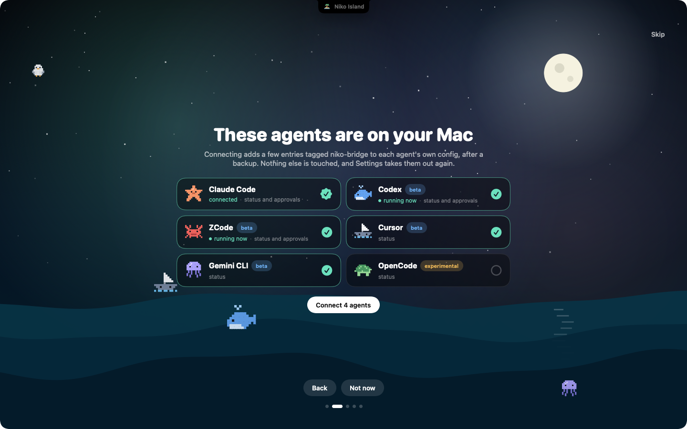
Set up before you finish your coffee
The welcome looks for the agents you have, tells you which ones are running right now, and connects the ones you tick. Skip it and nothing is touched.
These pictures are rendered by the app's own view code with sample sessions. They are renders, not captures of somebody's desktop.
Hear it without looking
Five moments can make a sound. The two built-in sets are a few notes generated by the app, with no audio files inside it. The buttons run the same recipe in your browser.
Work started
An agent picked up your prompt.
Needs you
A permission request or a question is waiting.
Finished
An agent finished its turn.
Hit an error
A turn ended because something failed.
Limit close
A rate-limit window passed 90%.
Sounds are off by default. Prefer something else? Pick a macOS system sound per moment, drop your own files into ~/.niko-island/sounds/, or add a pack folder with an openpeon.json manifest.
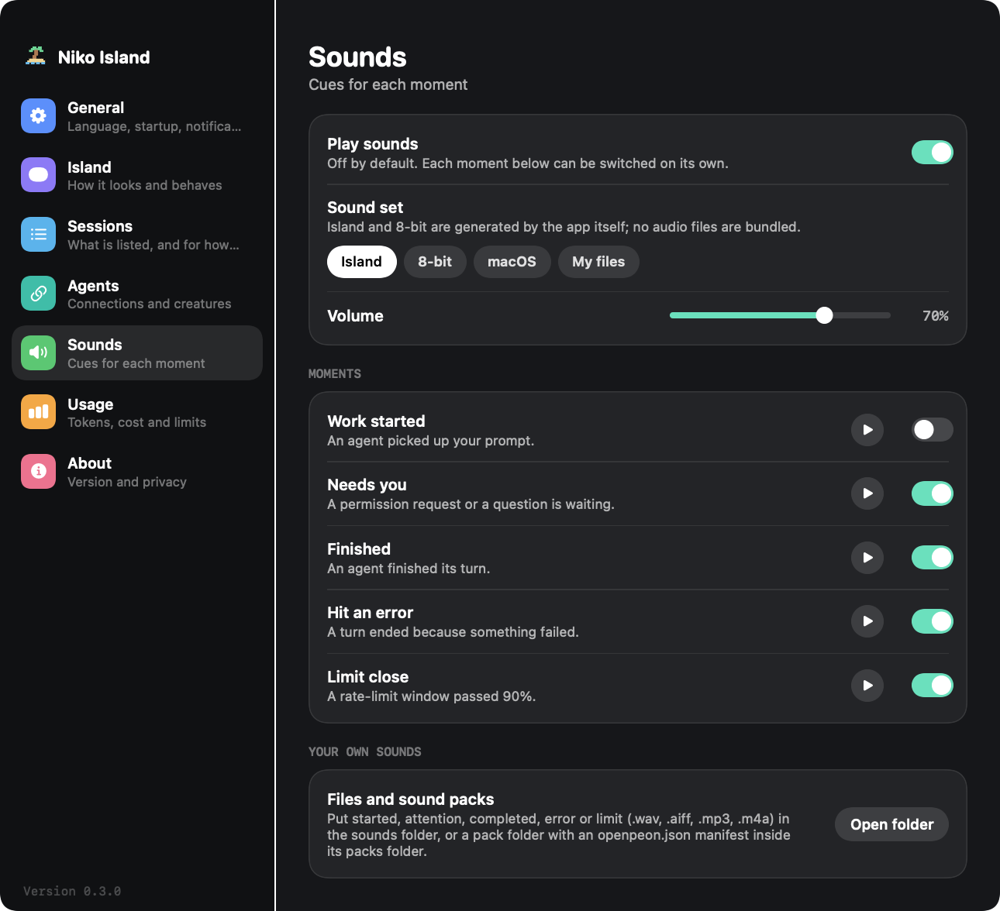
Works with the agents you run
Claude Code is supported end to end. Codex and ZCode can be approved from the island too, in beta; the others show their status. Claude Code and Codex sessions are listed even before you connect anything.
The README lists exactly what was and was not verified, including the hands-on checks still to do.
No telemetry. No account. All local.
A tool that sits between you and your agents should be easy to check. Here is everything it does with your data.
- Nothing phones home. There is no analytics, crash reporting or update check in the app.
- One optional download, off by default: a public list of model prices for the cost estimates. That is the only network code in the project.
- Owner-only local channel. Agents reach the app through a socket in a private directory, and the app checks who is calling on every message.
- Trimmed at the source, kept in memory. Tool output is dropped and long text in status events is shortened before it leaves the agent. Nothing from an event is written to disk; the usage database holds numbers and identifiers, never prompts or replies.
- Session logs are read, never changed. To list sessions and count tokens the app reads the logs Claude Code and Codex keep on your disk. A title or a last reply is held in memory while its row is shown, and goes nowhere.
- Your credentials are never read. No keys, no tokens, no proxying.
- Hooks you can audit. Every entry the installer writes contains
niko-bridge. Search for it any time.
~/.niko-island/ ├── bin/ bridge and status-line launchers ├── run/ local socket, owner-only ├── cache/ rate limits, optional price list ├── data/usage/ token counts in SQLite ├── sounds/ your own sounds, if you add any └── logs/ redacted diagnostics
Up and running in about a minute
The app is ad-hoc signed because the project has no Apple Developer account, so macOS will not open a downloaded copy until you clear its quarantine flag once. After that it opens like any other app.
Download the build for your Mac
Get the .dmg from GitHub: apple-silicon for a Mac with an M-series chip, intel for a Mac with an Intel processor. Apple menu → About This Mac tells you which. A .zip of each is there too.
Drag it to Applications and open it
Open the disk image and drag Niko Island onto Applications, then clear the quarantine flag with the command below. Without a terminal: on macOS 14, right-click the app and choose Open; on macOS 15 or later, try to open it once, then use System Settings → Privacy & Security → Open Anyway.
xattr -cr "/Applications/Niko Island.app" open "/Applications/Niko Island.app"
Let the welcome connect your agents
The first launch finds the agents on your Mac and connects the ones you tick; the Agents page in Settings does the same later. Prefer the terminal? Look at the plan first: nothing changes until the second command.
# show what would change "/Applications/Niko Island.app/Contents/MacOS/niko-island" install --dry-run --recommended # apply it (a backup of each config is kept next to it) "/Applications/Niko Island.app/Contents/MacOS/niko-island" install --recommended
Changed your mind?
Uninstalling removes only its own entries and restores your status line. Your agents keep working.
~/.niko-island/bin/niko-island uninstall
Or build it yourself
You need macOS 14 or later and Xcode 16 or later.
git clone https://github.com/baogutang/niko-island.git cd niko-island scripts/make-app.sh open "dist/Niko Island.app"
Open, on purpose
There are polished closed-source apps for this job. Here is the honest trade if you would rather read the code.
| Niko Island | A typical closed-source alternative | |
|---|---|---|
| Price | Free | Paid license or subscription |
| Source | MIT, all of it | Not available |
| License key | None | Usually required |
| Tracking | None, and you can verify it | You take their word for it |
| Direction | Issues and pull requests | The vendor's roadmap |
| Code signing | Ad-hoc: one extra step at first launch | Usually notarized |
| Agent coverage today | One stable integration, the rest in beta or experimental | Often broader |